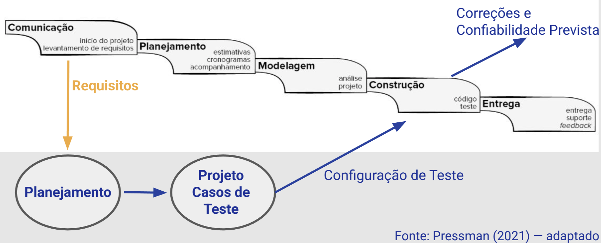
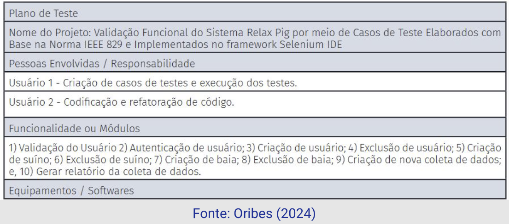
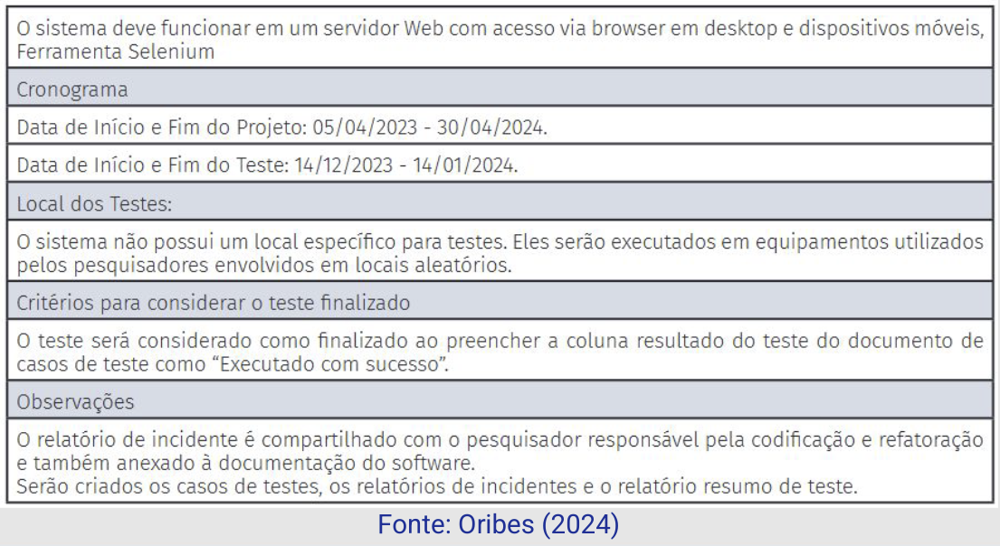
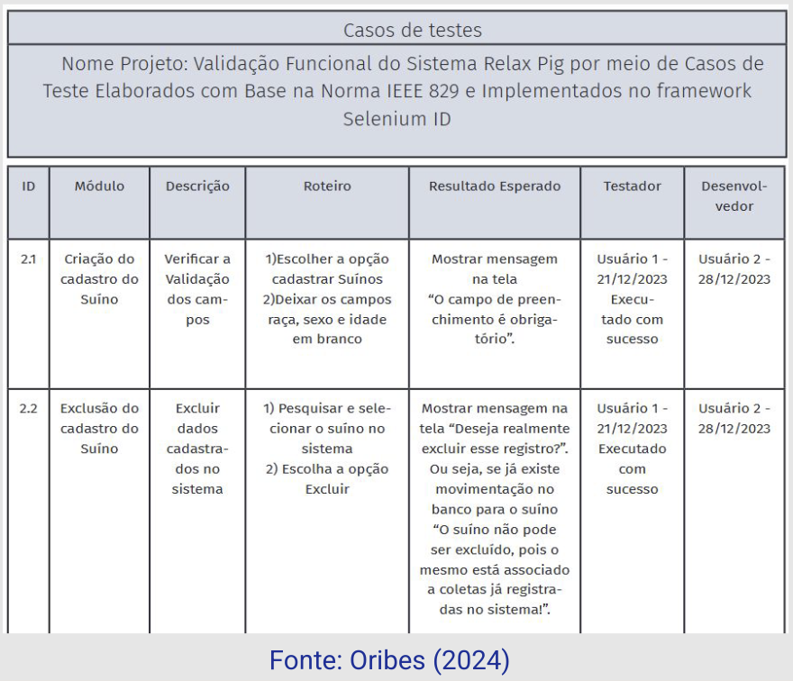
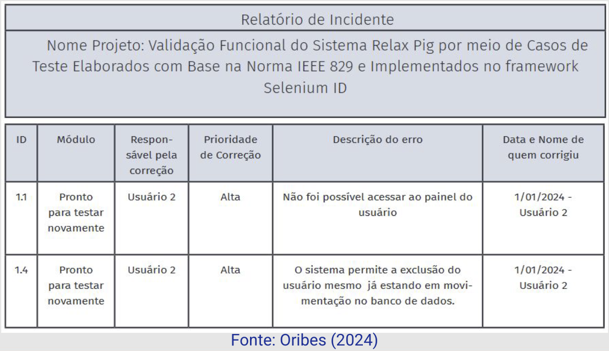
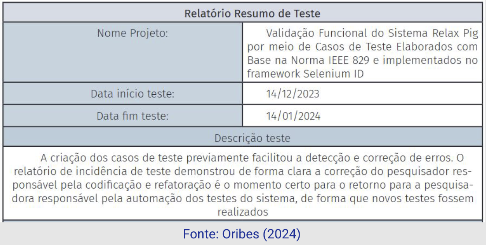
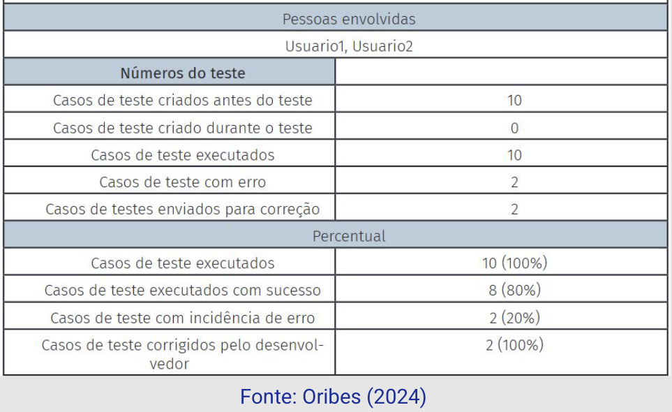

Disciplinas
VERIFICAÇÃO, VALIDAÇÃO E TESTE DE SOFTWARE. Concluído
Materiais
[UFMS Digital] Verificação, Validação e Teste de Software - Módulo 3 - Unidade 1
Prof° ministrante: Leonardo Souza Silva.
Em nossa última aula.
- Compreendemos como podemos derivar Casos de Teste a partir de Casos de Uso.
- Revisamos o processo de identificação de casos de uso.
- Importância da documentação de projeto do software.
- Documento de Especificação de Requisitos de Software.
Documentação de Software
- Qualquer material, textual ou não, utilizado por profissionais na realização do seu trabalho;
- Expectativa → informações completas e imprescindíveis para o profissional poder alcançar seu objetivo ou realizar uma ação;
- Boa documentação deve apoiar a equipe de desenvolvimento na compreensão e manutenção do software.
Principais Problemas — Documentação.
- Falta de Informações
- Desatualização
- Linguagem
- Dificuldade de Uso
Documentação de Teste de Software.
- Cenário ideal → disponibilidade de um grupo de testadores;
- No mundo real → um dos analistas, que não está envolvido no desenvolvimento, assume essa função.
- Além do Planejamento de Teste, relatórios serão gerados pela atividade.
- Informar tudo o que precisa ser corrigido ou melhorado.
- Capacidade de reproduzir um teste de software de maneira consistente.
- Repetibilidade → Variação devida ao dispositivo de medição. É a variação que se observa quando o mesmo operador mede a mesma peça várias vezes, utilizando o mesmo medidor, sob as mesmas condições.
- Reprodutibilidade → Variação que se observa quando diferentes operadores medem a mesma peça várias vezes, utilizando o mesmo medidor, sob as mesmas condições.

...
- Identificar as funcionalidades a serem testadas;
- Recursos necessários para a execução do teste;
- Humanos, tecnológicos e ambientais;
- Recomendar técnicas e estratégias;
- Definir procedimentos; e
- Indicar o tipo de relatório a ser produzido;
- O que se espera? Qual o objetivo?
- Apoio dos Requisitos: funcionais e não funcionais.
- Por norma:
- Plano de Teste;
- Casos de Teste; e
- Roteiro de Teste.
Norma IEEE 829
- Padrão para Documentação de Teste de Software;
- Apresenta padrões a serem adotados no formato dos documentos.
- Não indica quais documentos deverão ser elaborados nem define o conteúdo que devem conter.
- Objetivos:
- Simplificar a leitura;
- Facilitar a comunicação.
- Plano de Testes;
- Especificação do Projeto de Teste;
- Especificação de Casos de Teste;
- Especificação dos Procedimentos de Teste;
- Relatórios - Diário de Teste;
- Relatório de Incidentes de Teste;
- Relatório de Resumo de Teste;
- Relatório de Encaminhamento de Itens de Teste.
- Especificação do Projeto de Teste;
- Funcionalidades e as características a serem testadas;
- Especificação de Casos de Teste;
- Identifica as ações e condições para a execução dos testes;
- Especificação dos Procedimentos de Teste;
- Procedimento e o passo a passo para execução do teste.
- Apontamentos e registros dos detalhes mais importantes que foram identificados durante a realização dos testes.
- Histórico das falhas encontradas (aprendizado — V&V);
- Detalhamento dos eventos ocorridos durante a execução do teste, importante para auxiliar na reprodução do erro.
- Apresentar os resultados obtidos.
- Quando houver equipes distintas para testar partes diferentes do software, este relatório indica quais itens foram encaminhados e para qual equipe foram designados.
Documentos não são uma imposição → diretriz;
- Empresa tem liberdade para decidir quais documentos adotar e como adaptá-los à sua realidade;
- Aplicável a software simples ou complexo;
- Apoia a gestão do projeto.
Outra perspectiva, PMBOK.
- Documento extenso que reúne as melhores práticas existentes no gerenciamento de projetos.
- PMI — Instituto de Gerenciamento de Projetos.
- Página do PMI Brasil (https://www.pmi.org/brasil)
- PMI encara o Teste de Software como um projeto;
- PMBOK não define uma padronização, mas oferece ferramentas para a gestão (10 áreas de conhecimento).
- Gerenciamento de escopo;
- Gerenciamento de custos;
- Gerenciamento de tempo;
- Gerenciamento de qualidade;
- Elaborar indicadores que permitam avaliar se a atividade de teste está sendo realizada da maneira planejada.
- Gerenciamento de integração;
- Relaciona o Teste de Software com o projeto de desenvolvimento do software.
- Gerenciamento de recursos humanos;
- Gerenciamento de comunicação;
- Gerenciamento de riscos;
- Considerar diferentes aspectos que influenciam a atividade, tais como, humanos, tecnológicos, financeiros, outros.
- Gerenciamento de aquisições e suprimentos;
- Aquisição de software e ferramentas necessárias a execução do Teste de Software.
- Gerenciamento de partes interessadas.
Ex.:
Validação funcional do sistema Relax Pig por meio de casos de teste elaborados com base na norma IEEE 829 e implementados no Framework Selenium
https://periodicos.iffarroupilha.edu.br/index.php/boletim-tecnico-cientifico/article/view/485Ex.: Plano de teste

...

...
Ex.: Caso de teste

...
Ex.: Relatório de incidente

...
Ex.: Relatório de resumo

...

...
Nesta aula...
- No exemplo, a norma 829 foi adaptada para as necessidades da equipe de desenvolvimento.
- Escolha do formato e conteúdo.
- Para pensar... E se fosse o responsável por esse projeto e recebesse essas informações da equipe de teste?
- O relatório estaria bom ou necessitaria de ajustes?